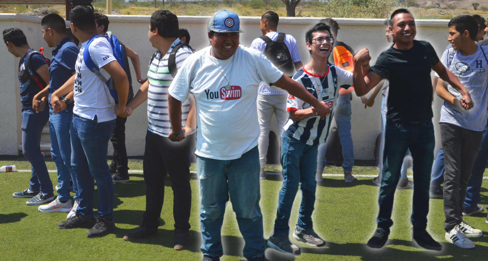
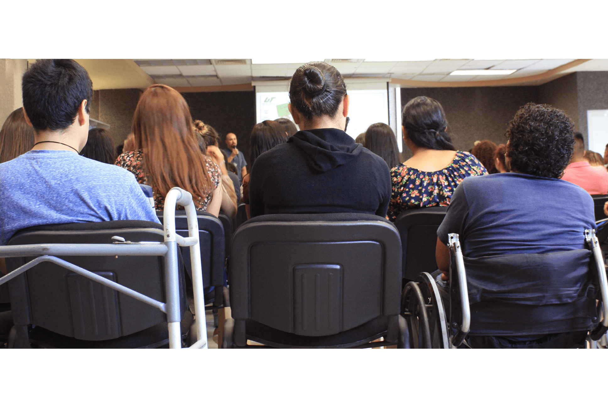

Educación Incluyente
UNIVERSIDAD TECNOLOGICA SANTA CATARINA
UNIVERSIDAD TECNOLOGICA SANTA CATARINA
La inclusión, en términos de educación, es un proceso mediante el cual todos los estudiantes, incluso aquellos que tengan algún tipo de discapacidad, reciben su formación en igualdad de condiciones. Esto implica realizar las adaptaciones necesarias, desde el punto de vista académico y de equipamiento para que ambos, personas con o sin discapacidad, puedan estudiar sobre una misma base y en un mismo entorno físico.
La integración se basa en la normalización de la vida de los alumnos con algún tipo de discapacidad, entendiendo normalización como la adaptación de los estudiantes a un sistema educativo predeterminado. Para ello se habilitan determinados apoyos, recursos y profesionales.

El Diseño Universal es una estrategia de planificación y diseño de productos y entornos orientada a alcanzar una sociedad incluyente, que asegura la plena igualdad y participación de todas las personas. Una de las finalidades principales del Diseño Universal es promover la igualdad de oportunidades y asegurar la plena participación en la sociedad de las personas.
